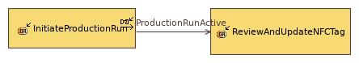

ProductionCycleProcess
OperationalProcess
FischertechnikFactory > FischertechnikFactory > Operational Analysis > Operational Activities > Root Operational Activity > ProductionCycleProcessNo description.
Involved activities
| Activity | Involvement Description |
|---|---|
Involved interactions
| Interaction | Involvement Description |
|---|---|
Owned diagrams
ProductionCycleProcess
